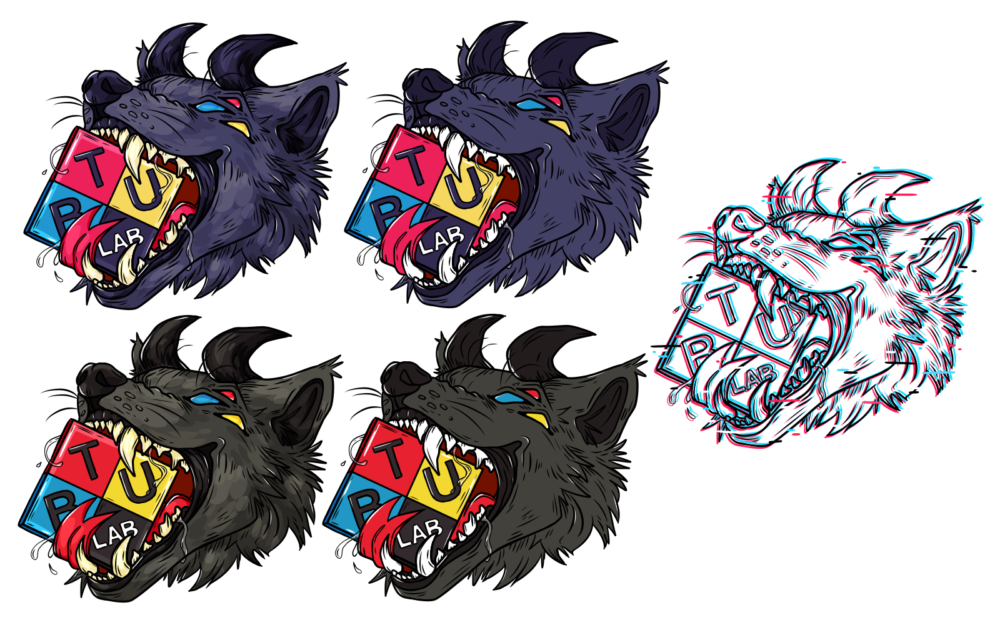

oct 2023 <
The Blow Things Up Lab on CU Boulder campus wanted a sticker design to be handed out at outreach events. The sticker was drawn digitally in FireAlpaca.

The BTU Lab is an inclusive makerspace on a college campus. The director of the space contacted me to design a sticker with the lab's logo on it. The client specified that they wanted a design that would appeal to college kids and was 'radical'. I was given artistic freedom beyond that to come up with a design. Once finished, the lab ordered the stickers in bulk and many students placed them on their laptops and water bottles.
I provided the client with multiple different designs they could choose from. Some feature shading and slight color changes, while one is outline only.